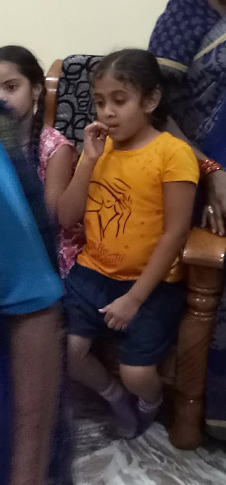
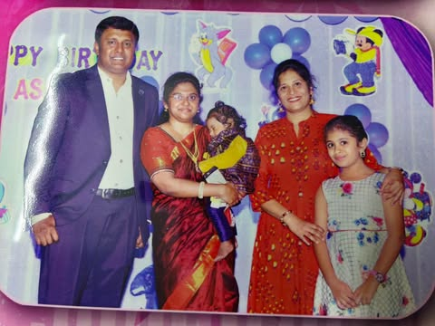
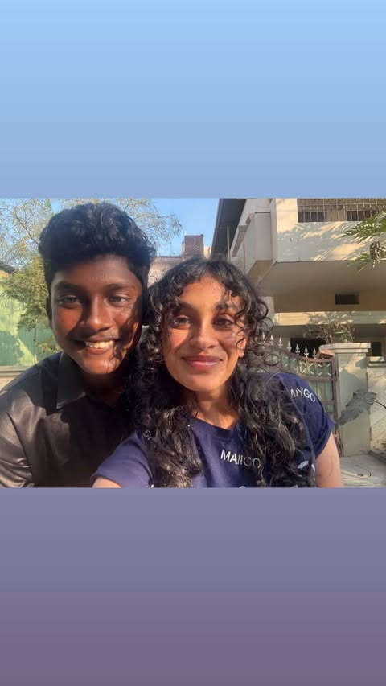

Somewhere along the way…
we didn’t drift.

Before years had names.
Before we knew what staying meant.
Time moved quietly.
We did too.
Somewhere along the way…
we didn’t drift.
Different versions of us.
The same familiarity.
I don’t know where this goes.
And I don’t need to.
I just know I’d like to find out…
with you.